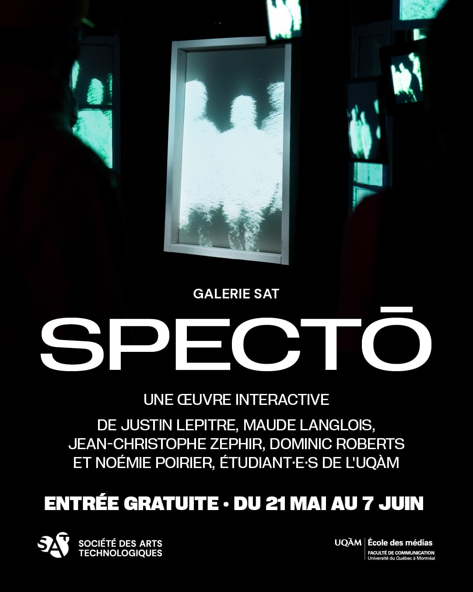

"SPECTŌ" ➡
présenté à la  Société des arts technologiques [SAT] ➡ est une installation interactive conceptulisé et créé par
Noémie Porier, Justin Lepitre, Dominic Roberts, Maude Langlois et Jean-Christophe Zephir.
C'est une installation immersive qui questionne la dynamique du regard et la perception de soi dans
un monde hyperconnecté. À travers un parcours de fenêtres suspendues, le spectateur devient à la fois
observateur et sujet d'observation. Des séquences vidéo représentant des moments du quotidien réagissent
à la présence du spectateur, créant une expérience qui évolue de l'inconfort à la confrontation directe.
En inversant les rôles, "SPECTŌ" met en lumière le voyeurisme, l’exposition de soi et l’impact de
l’observation sur ce que l’on perçoit et vit.
Société des arts technologiques [SAT] ➡ est une installation interactive conceptulisé et créé par
Noémie Porier, Justin Lepitre, Dominic Roberts, Maude Langlois et Jean-Christophe Zephir.
C'est une installation immersive qui questionne la dynamique du regard et la perception de soi dans
un monde hyperconnecté. À travers un parcours de fenêtres suspendues, le spectateur devient à la fois
observateur et sujet d'observation. Des séquences vidéo représentant des moments du quotidien réagissent
à la présence du spectateur, créant une expérience qui évolue de l'inconfort à la confrontation directe.
En inversant les rôles, "SPECTŌ" met en lumière le voyeurisme, l’exposition de soi et l’impact de
l’observation sur ce que l’on perçoit et vit.
Technologiquement, l'installation utilise des caméras qui captent la distance de manière à détecter la présence des gens.
Accompagnés d'un système sonore surround génératif, la bande sonore diffusée via un ensemble de 12 haut-parleurs placés tout autour de l'espace, réagit en temps réel aux gestes
des visiteurs, offrant une ambiance sonore ambisonique et unique à chaque interaction.